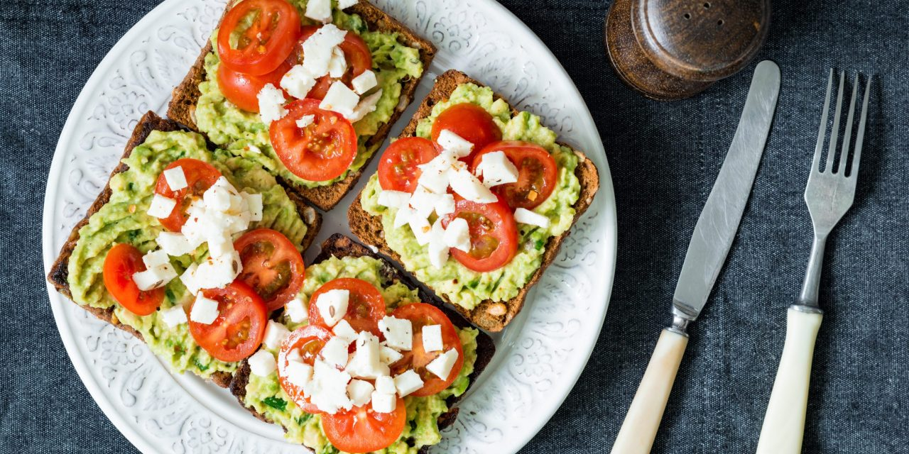

Тосты с авокадо
Приготовление
Разомните вилкой мякоть авокадо. Смешайте его с выжатым из лимона соком и измельчённым укропом. Пожарьте яйца на разогретом масле. Распределите авокадо по хлебу. На каждый ломтик выложите по одному яйцу. Добавьте кружочки помидора и посыпьте солью и перцем.
